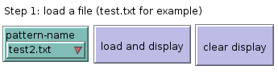
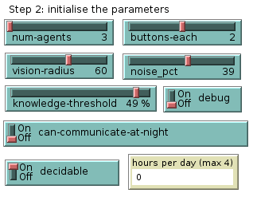
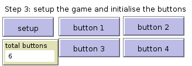
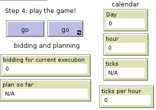
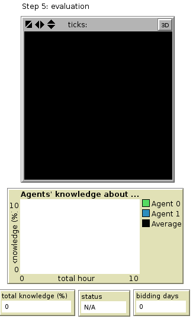
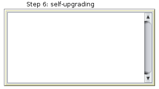
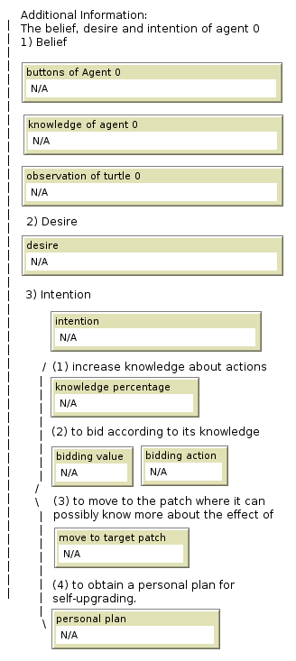
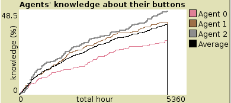

Introduction
This project introduces dynamic epistemic learning of actions to autonomic Multi-agent System for self-learning, planning and self-upgrading. More specifically, we implemented and tested a simulation in NetLogo to explore the relation between agents' knowledge about actions, planning and self-upgrading. A short paper is here
System Description
The system consists of some patches and a group of cooperative agents. They are located in a 2D environment filled with patches. The agents are assigned with a disjoint set of buttons (virtually) each to turn some patches green and some black (with no effect on the rest). The aim is to light up the patches by pressing the buttons sequentially as the goal pattern. Each day consists of several hours in daytime and a night. At the beginning of each day, patches are reset to black and the agents are randomly located and may move around while deciding exactly one button to be pressed per hour as the result of a bidding process. The effect of the action can be learnt by comparing the color of the patches within the vision radius before and after the button got pressed. Before mixing up learning and planning, the system allows a trying period where agents randomly choose the buttons until the average knowledge of the agents reach a user defined threshold (the system would not notify the agents even if the goal is reached while trying). After obtaining a reasonable amount of knowledge about the actions, the agent start to bid on all possible actions to be performed next. Only the owner of the winning action will press the corresponding button. The buttons are generated ensuring at least one valid plan. Once the goal is achieved after the trying period, the agents are informed and then upgrade themselves according to their knowledge about actions and the individual actions to obtain the pattern. For simplicity, agents only communicate at night.
Tutorial
Step 1:
First, load a pattern and test it on the patches using the two buttons "load and display" and "clear display". Please note that the "pi.txt" can be take a long time.
The following are attributes and buttons related to this step:
pattern_name: This input box takes in the name of the file that contains the description of the goal pattern. the format is as follows:
1) The file is a simple txt file. The first line of the file always consists of 2 values, the height and the width of the world.
2) The file follows with a comma separated logical matrix, with the a value of 1 denoting an “on” pixel and a value of zero for an “off” pixel.
- Load and display: This button loads the file, and displays it in the viewer for the user to see the end goal design.
- Clear display: This button simply clears the displays.
Step 2:
There are some parameters to be initialised before setting up the game.
- num_agents: This slider controls how many agents are there in the world to solve the problem.
- button_each: This slider controls how many buttons each agent gets.
- vision_radius: This slider controls how far an agent can see and observe the environment.
- num_hours: This slider controls how many hours make up the day in the environment.
- noise_pct: This slider controls how much disturbance (in percentage) is added to the search in order for it to branch into a tree, rather than becoming a linear path to the goal.
- decidable: this decides if all the patches can be turn "on" by at least one button.
Step 3:
This step is simply a set-up step. Four example buttons generated are available for manual tests (together with the "clear display" button).
- setup: This button sets up the world by initialising the world to its primitive state, loading the goal pattern in memory, spawning the agents and initialising their goals, beliefs, desires, intentions and button configurations, etc.
- total buttons: This monitor shows how many buttons in total are there for the goal pattern to be generated. This is determined by multiplying the number of buttons each agent gets with the number of agents.
- button 1 - 4: these buttons are generated buttons leading towards the goal: pressing these buttons sequentially would lead to the goal pattern but the agents do not know about this.
Step 4:
There are two ways to run the simulation: to do it step by step or run the game automatically.
- go: This is a once button, and so it advances the world by one tick. The belief, intention, desire of agents may change. Note that this does not necessarily takes you to the next hour.
- go (forever variant): This is a forever button variant, hence it continuously calls the go method and advances the ticks till the user stops it manually. it maybe the case that the agents got stuck because of too little information about actions. This game was designed in a way that these agents would not know the whole plan. So these agents will not be able to distinguish different executions. Therefore, repeated executions are allowed to happen.
- day: This monitor tracks the day.
- hour: This monitor tracks the hour.
- plan so far: This monitor shows the most optimal plan found so far that is nearest to the goal node. This also represents the actions during the past few hours.
- bidding: This monitor shows the bidding values of each buttons. It is clear to find out which button has won the bidding.
Step 5:
Apart from the patches we also provide a graphical representation of the knowledge of the first two agents and the overall knowledge of all the agents. The x-axis is the total hours taken while the y-axis is the agent's knowledge in percentage. This was calculated by dividing the length of each action's "know true" knowledge by the total number of patches. Notice that there is a chance that the knowledge can not go to 100%. That is, the action can remain undecidable even if the buttons are set to be decidable (due to the misleading buttons and the noise).
- total knowledge: this number is a rough evaluation of the overall knowledge of agent's knowledge. This is provided to be compared with the knowledge threshold.
- status: there are two status, bidding and trying. When the game is in trying status, even if the agent's reach the goal by accident the agents will not be informed anything. The game continues.
- bidding days: the total number of days the agents have been bidding.
Step 6
Here we also provide a representation of the distributed upgrading programs. Each agent knows the goal and knows what to do at what time. The agent will pass on notification and wakes each other up to perform actions. When the agents finished pressing the last button, the agent would notify every other agent and they all check if there is anything mismatching the goal.
Additional Information
Some additional information about the belief, intention and desire (of agent 0) is provided alongside.
Evaluation and Discussion
The figure below shows a case where it takes one day to reach the goal once the agents' knowledge about actions reached the knowledge threshold. In some other cases when the threshold is low, the agents would need more time to learn while attempting. The evaluations indicate that the system is of good efficiency for small patterns with the amount of patches less than 400 and number of hours less than 5. The process usually terminates within 10 seconds. The evaluation also indicates that the complexity of the patterns has an impact on the learning and planning process. For instance, \textit{sad.txt} is bigger than smile.txt but it takes 33.6 days on average while smile.txt takes over 200 days (for a test of 5 runs each). In addition, we noticed that there are cases where agents are fooled or mislead to take another plan when the noise percentage is too high. The smaller the pattern is, the more likely the misleading. This may due to the use of depth-first search for imperfect information planning. In addition, the PC used is a 64 bit Windows laptop with 4 x Intel(R) Core(TM) i5-4210H CPU @1.90Hz and RAM of 12G running NetLogo 5.3.
Support or Contact
Having trouble while running the simulation? contact me and I’ll help you out.
Want to know more? A short paper is here